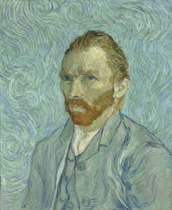
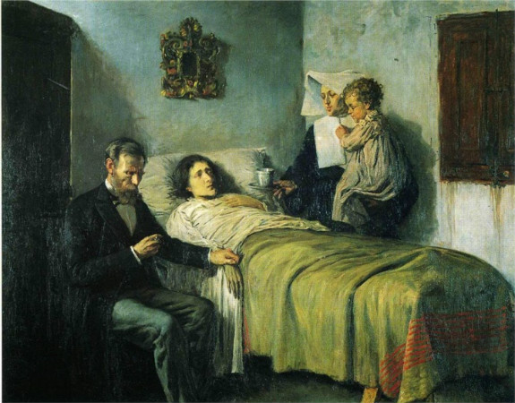
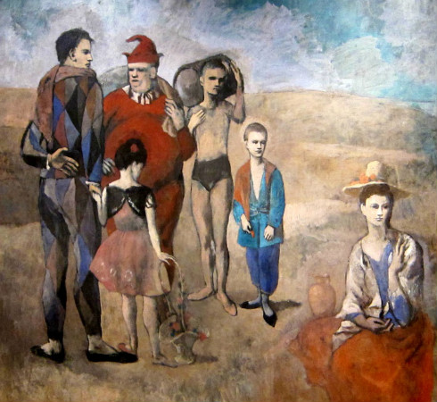
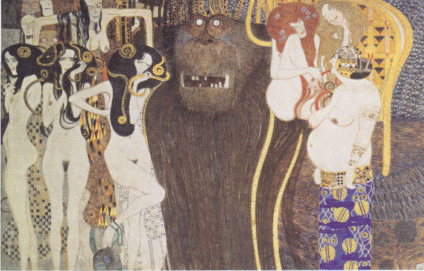
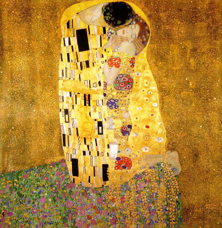
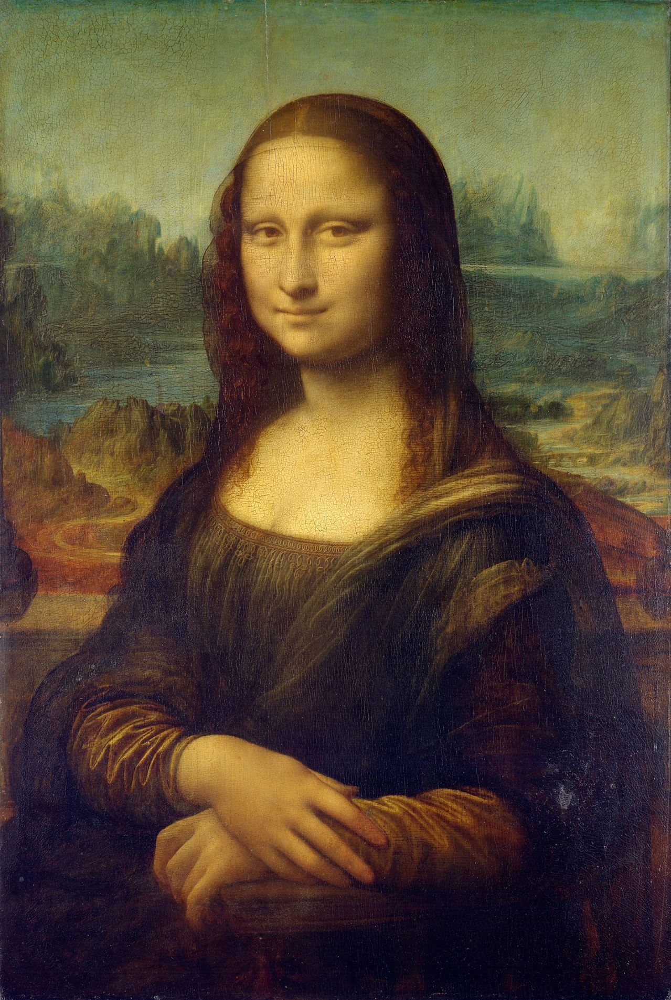

Sanat Galerim
Anasayfa Sergiler HakkımızdaGalerimiz
- Yıldızlı Gece, 1889 |Vincent van Gogh
- Otoportre, 1889 |Vincent van Gogh
- Bilim ve Hayırseverlik, 1895 |Pablo Picasso
- Soytarılar Ailesi, 1905 |Pablo Picasso
- Beethoven Frieze, 1902 |Gustav Klimt
- Öpücük, 1905 |Gustav Klimt
- Mona Lisa, 1503 |Leonardo da Vinci
- Son Akşam Yemeği, 1498 |Leonardo da Vinci






